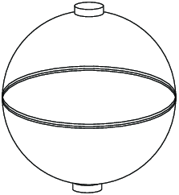

Din venninne Q har kommet opp med en ny oppfinnelse som hun stolt presenterer for deg. Hun har laget en elastisk ball av skumgummi. På to motstående sider av ballen har hun limt fast to sterke permanente magneter. Rundt midten av ballen har hun surret en ledning 100 ganger rundt. Figuren viser en skisse av oppfinnelsen.

Se her, sier hun, når jeg klemmer på denne her lager jeg strøm som jeg kan bruke til å lade opp mobiltelefonen min. Nå slipper jeg å gå tom for strøm!
Du kan anta at ballen ha en diameter på 6 cm og at magnetfeltet midt mellom de to magnetene er tilnærmet homogent med en styrke på 0.01 mT. (Det vil ikke være homogent, men for våre argumenter er det greit å anta at det er homogent).
a) Kan denne oppfinnelsen virke? Blir det dannet en emf i dette systemet?
Ja. Fluksen vil endres hvis man klemmer, så det blir indusert en spenning.
b) Kan du estimere hvor stor emf'en er hvis du presser ballen sammen så diameteren rundt ekvator blir halvparten så stor på ca ett sekund? (Du kan anta at magnetfeltet ikke endrer styrke).
\( e = 2.0 \, \mu \text{V} \)
c) Hvordan kunne du laget en bedre modell for den induserte spenningen?
Du kan f.eks. bruke en bedre tilnærming for magnetfeltet fra en permament magnet som tilnærmet er gitt som et magnetisk dipolfelt. Dette vil kunne gi et bedre estimat på feltet fra en faktisk magnet.